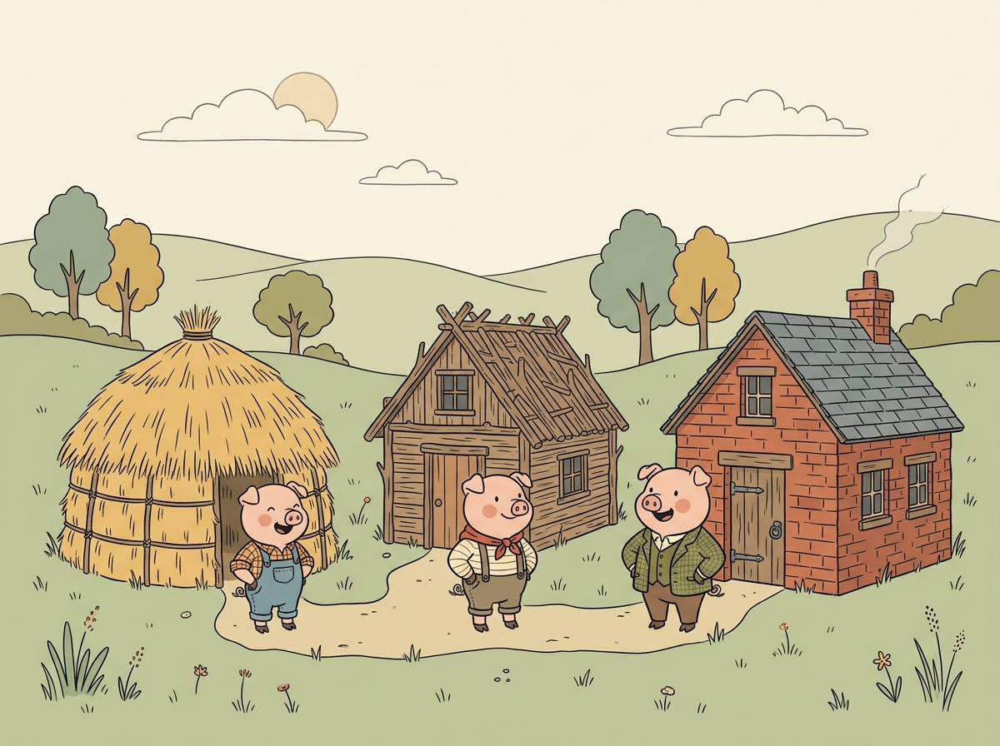
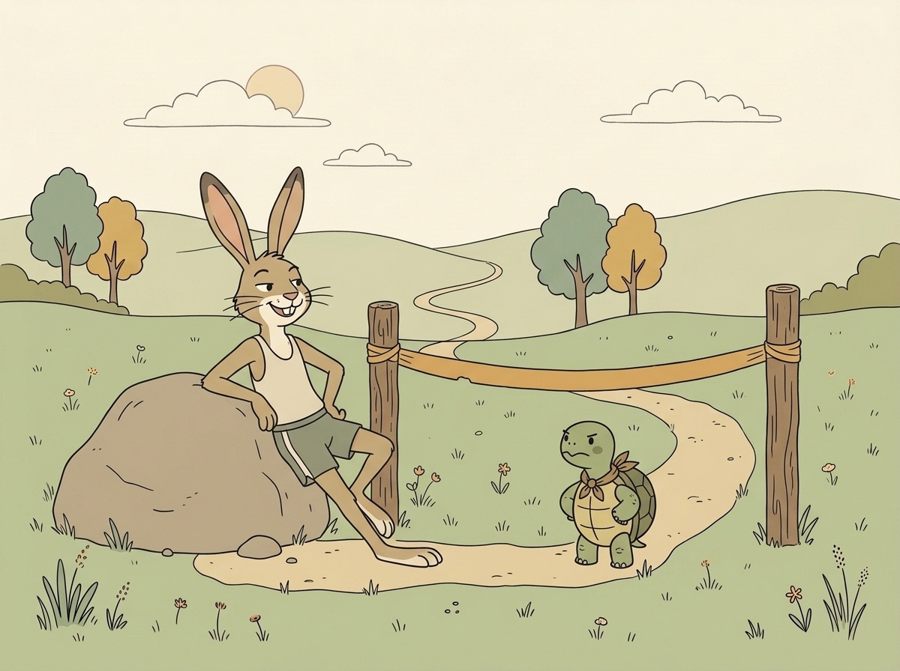
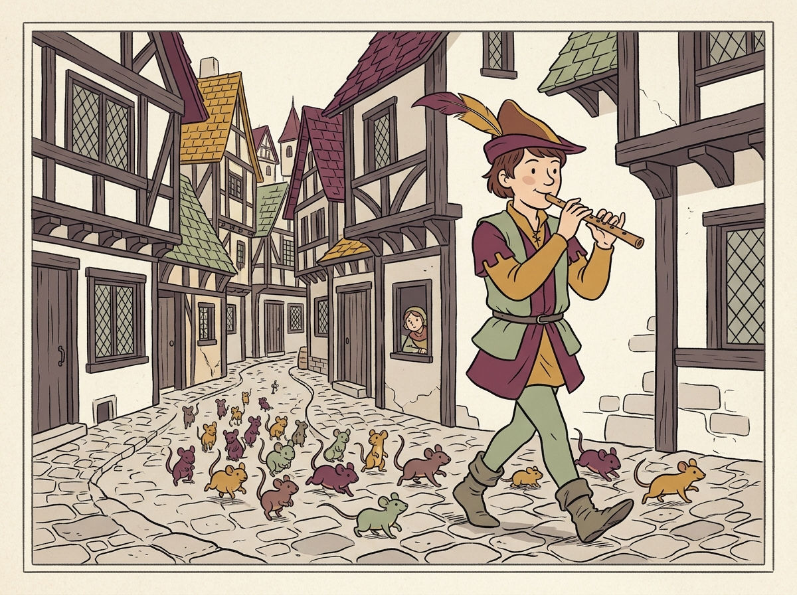

Los tres cerditos
Tres hermanos construyen sus casas y se enfrentan al lobo feroz.
Lee con calma y descubre cómo se encadenan sus momentos.

Tres hermanos construyen sus casas y se enfrentan al lobo feroz.

Una célebre carrera campestre donde la constancia vence a la soberbia.

Una melodía mágica libera a la ciudad de una invasión inesperada.
💡 Consejo para el lector: Toca las palabras destacadas en amarillo si no entiendes su significado. Al terminar la lectura, ordenaremos los cuatro pasos principales.
Arrastra las tarjetas a las casillas o toca una tarjeta y luego su casilla.
Has ordenado los acontecimientos exactamente como ocurrieron de principio a fin.
Esta prueba de concepto se enfoca en niños y niñas de 7 a 8 años (segundo curso de Primaria). A los 6 años la interacción motriz de arrastre sobre teléfono móvil provoca frustración física y la atención se vuelca en la decodificación silábica; a los 10 años ordenar cuatro escenas resulta trivial. El tramo de 7 a 8 años es el momento evolutivo donde se afianza la comprensión de relaciones causa-efecto en sesiones de 5 a 8 minutos en el hogar o apoyo escolar.
Se adopta una única idea central: la reconstrucción secuencial y cronológica de relatos tradicionales mediante cuatro momentos estructurales (planteamiento, conflicto, clímax y desenlace). No se dispersa la atención en compras, avatares ni clasificaciones competitivas.
• Ausencia total de cronómetros: Los estudios de Delgado y Salmerón demuestran que la prisa en pantallas perjudica la comprensión profunda.
• Sin mecánicas punitivas: No hay pérdida de vidas ni castigos que generen sobrejustificación conductual (Deci, Ryan y Lepper). El error se gestiona mediante anclaje de aciertos y pistas contextuales amables.
• Foco Táctil Acromático: Interfaz en escala neutra de hueso y piedra (#F7F4EE, #2B2A27) para ceder todo el protagonismo a la lectura y reservar el color exclusivamente para la respuesta motriz.
• Tipografía Atkinson Hyperlegible: Seleccionada para evitar la confusión entre caracteres simétricos (b/d, p/q, l/I/1) respaldada en pruebas de seguimiento ocular, superando las fuentes artificialmente deformadas.
• Interacción Dual Inclusiva: Soporta arrastrar y soltar nativo o pulsación asistida (tocar tarjeta y tocar casilla) para sortear la imprecisión en pantallas pequeñas.
• Entorno Seguro y Limpio: Sin publicidad, sin recopilación de datos de menores conforme al RGPD y LOPDGDD, y contenido íntegro en un único archivo autónomo listo para GitHub Pages.